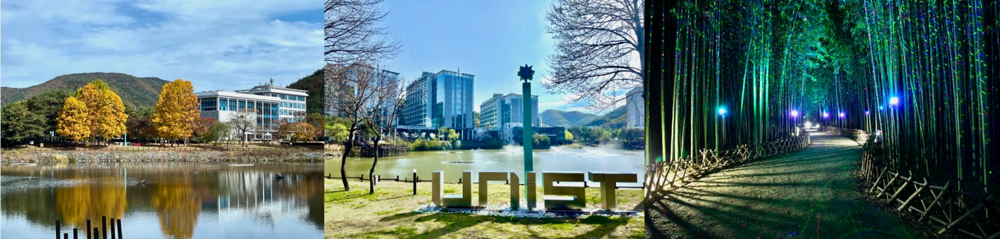

2026 한국 소프트웨어공학 학술대회 (KCSE 2026)
소프트웨어 공학 가치의 확산: DevSecOps, MLSecOps, 그리고 그 너머
[행사개요] [모시는 글] [참가 등록] [논문 모집 분야] [논문 접수] [주요 일정] [논문 및 제안서 제출] [기조연설] [조직위원] [학술위원]
행사개요
- 일시: 2026년 2월 4일 (수) ~ 2월 6일 (금)
- 주최: 한국정보과학회, 한국정보처리학회
- 주관: 한국정보과학회 소프트웨어공학 소사이어티, 한국정보처리학회 소프트웨어공학연구회
- 장소: UNIST (울산과학기술원)
모시는 글
한국정보과학회와 한국정보처리학회가 공동 주최하고 한국정보과학회의 소프트웨어공학 소사이어티와 한국정보처리학회의 소프트웨어공학 연구회가 공동 주관하는 “제 28회 한국 소프트웨어공학 학술대회 (KCSE 2026)”가 2026년 2월 4일 (수)부터 2월 6일 (금)까지 UNIST에서 개최됩니다. DevOps, MLOps, DevSecOps, MLSecOps와 같은 다양한 신조어의 등장은 소프트웨어공학의 개념과 가치가 개발뿐 아니라, 보안, 인공지능, 데이터 등 컴퓨터공학의 여러 분야로 확장되고 융합되고 있음을 보여줍니다. 소프트웨어공학적 관점과 접근법은 이제 여러 분야의 연구와 실무에서 새로운 형태로 해석되고 적용되며 그 영향력을 넓혀가고 있습니다. 이번 KCSE 2026에서는 이러한 변화의 흐름 속에서 소프트웨어공학의 가치가 어떻게 재해석되고 확산되며, 다양한 분야와 어떻게 연결되어 새로운 시너지를 만들어내는지를 함께 논의하고자 합니다. 학계와 산업계의 연구자와 실무자 여러분의 많은 관심과 참여를 부탁드립니다.
참가 등록
참가등록비(조식 2회, 중식 1회, 석식 2회 포함)
| 구분 |
일반 |
학생 |
학부/주니어 |
| 사전등록(1.21) |
260,000원 |
200,000원 |
90,000원 |
| 현장등록 |
280,000원 |
220,000원 |
110,000원 |
논문 모집 분야
다음에 나열된 분야를 포함한 소프트웨어공학 전 분야의 논문을 모집합니다.
논문 모집 분야 보기
- AI for Software Engineering
- Low Code, No Code, and Auto-coding
- Agile Methodologies
- Autonomic and (self-) Adaptive Systems
- Blockchain Platform/Blockchain-based Software Systems
- Cloud and Service-Oriented Computing
- Component-based Software Engineering
- Configuration Management and Deployment
- Cooperative, Distributed, and Collaborative Software Engineering
- Debugging, Fault Localization, and Repair
- Dependability, Safety, and Reliability
- Embedded & Realtime Systems
- Empirical Software Engineering
- End-user Software Engineering
- Formal Methods
- Green and Sustainable Technologies
- Human Factors and Social Aspects of Software Engineering
- IoT and CPS
- Middleware, Frameworks, and APIs
- Mining Software Repository
- Mobile and Pervasive Software Systems
- Model-Driven and Domain Specific Engineering
- Parallel, Distributed, and Concurrent Systems
- Program Languages and Systems
- Refactoring
- Requirements Engineering
- Reverse Engineering
- Search-based Software Engineering
- Security, Privacy, and Trust
- Software Architecture, Modeling, and Design
- Software Comprehension, Visualization, and Traceability
- Software Economics and Metrics
- Software Engineering Education
- Software Engineering for AI
- Software Engineering for Hyper-Connectivity, Super-Intelligence, and Hyper-Convergence
- Software Evolution and Maintenance
- Software Process and Standards
- Software Product Line Engineering
- Software Reuse
- Software Safety and Reliability
- System of Systems
- Testing, Verification, and Validation
논문 접수
논문 성격에 따라 아래와 같은 트랙으로 구분하여 접수합니다.
- 일반 (Regular) 논문: 대학, 연구소 또는 기업에서 수행한 이론, 실험, 아이디어 제시 위주의 논문 (8-10쪽)
- 단편 (Short) 논문: 대학, 연구소 또는 기업에서 수행한 이론, 실험, 아이디어 제시 위주의 논문 (2-4쪽)
- 산업체 논문: 소프트웨어 공학의 각종 기법을 실제 업무에 적용한 논문 (4-8쪽 논문 또는 발표자료)
- 학부생 논문: 학부생이 수행한 프로젝트, 이론/실험, 아이디어 위주의 논문 (4-8쪽 논문 또는 발표자료)
- 튜토리얼 제안서: 개인이나 팀을 구성하여 제안
※ 트랙별 우수논문을 선정하여 시상할 예정이며, 제출된 일반논문 중 우수논문을 선정하여 한국정보과학회 논문지 및 한국정보처리학회 논문지에 게재 추천
주요 일정
- 논문 접수 마감:
2025년 12월 23일 (화), 12월 30일 (화) 2026년 1월 13일 (화) (최종 마감)
- 튜토리얼 제안서 접수: 2025년 12월 30일 (화)
- 심사 결과 통보: 2026년 1월 19일 (월)
- 최종 원고 제출: 2026년 1월 26일 (월)
논문 및 제안서 제출
기조연설
- 2월 4일 (수): 박인욱 (LG 전자)
- 강연 제목: 추후 공지 예정
- 연설자 소개: 추후 공지 예정
- 2월 5일 (목): 이희조 (고려대학교)
- 강연 제목: 추후 공지 예정
- 연설자 소개: 추후 공지 예정
- 2월 6일 (금): 최재식 (KAIST)
- 강연 제목: 추후 공지 예정
- 연설자 소개: 추후 공지 예정
조직위원
조직위원 보기
- 이정원 대회장 (아주대학교)
- 유준범 대회장 (건국대학교)
- 이주용 조직 위원장 (UNIST)
- 김미정 학술 위원장 (UNIST)
- 홍신 재무 위원장 (충북대학교)
- 남재창 Web 위원장 (한동대학교)
- 김영재 Web 위원장 (UNIST)
- 배경민 튜토리얼 위원장 (POSTECH)
- 강종구 신진연구자 세미나 위원장 (성신여자대학교)
학술위원
학술위원 명단 보기
- 강종구 (성신여대)
- 고인영 (KAIST)
- 김기섭 (DGIST)
- 김동선 (고려대)
- 김문주 (KAIST)
- 김윤호 (한양대)
- 김정아 (가톨릭관동대)
- 김진대 (서울과학기술대)
- 김진현 (경상대)
- 김태호 (IITP)
- 김택수 (삼성전자)
- 김형석 (충남대)
- 남재창 (한동대)
- 류덕산 (전북대)
- 마유승 (ETRI)
- 박수진 (서강대)
- 박지훈 (충남대)
- 배경민 (POSTECH)
- 백종문 (KAIST)
- 서영석 (영남대)
- 손정주 (경북대)
- 송지영 (한남대)
- 안가빈 (고려대)
- 안성수 (경상대)
- 양근석 (한경대)
- 오학주 (고려대)
- 유명성 (서울시립대)
- 유신 (KAIST)
- 유준범 (건국대)
- 운회진 (협성대)
- 이선아 (경상대)
- 이우석 (한양대)
- 이은서 (국립경국대)
- 이은주 (경북대)
- 이재권 (강원대)
- 이정원 (아주대)
- 이지현 (전북대)
- 이찬근 (전북대)
- 이희진 (동양미래대)
- 정우성 (서울교대)
- 정필수 (경상대)
- 지은경 (KAIST)
- 차상길 (KAIST)
- 차수영 (성균관대)
- 채홍석 (부산대)
- 최윤자 (경북대)
- 허기홍 (KAIST)
- 홍신 (충북대)
- 홍장의 (충북대)